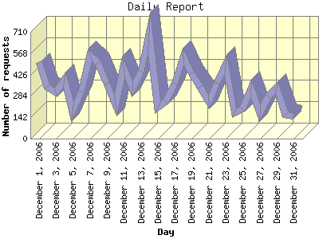

Report generated by Analog 6.0 and Report Magic 2.21
|
Web Server Statistics for "Harish Narayanan (hnarayan) - December 2006" Report generated by Analog 6.0 and Report Magic 2.21 |
The Daily Report identifies the activity for each day within the reporting period. Remember that one page hit can result in several server requests as the images for each page are loaded.

| Day | Number of requests | Number of bytes transferred | Percentage of the bytes | Percentage of the requests | |
|---|---|---|---|---|---|
| 1. | December 1, 2006 | 510 | 71.328 MB | 5.73% | 4.77% |
| 2. | December 2, 2006 | 346 | 49.447 MB | 3.98% | 3.24% |
| 3. | December 3, 2006 | 305 | 16.915 MB | 1.36% | 2.85% |
| 4. | December 4, 2006 | 390 | 165.910 MB | 13.34% | 3.65% |
| 5. | December 5, 2006 | 180 | 10.774 MB | 0.87% | 1.68% |
| 6. | December 6, 2006 | 314 | 18.892 MB | 1.52% | 2.94% |
| 7. | December 7, 2006 | 555 | 23.334 MB | 1.88% | 5.19% |
| 8. | December 8, 2006 | 501 | 169.580 MB | 13.63% | 4.69% |
| 9. | December 9, 2006 | 363 | 29.460 MB | 2.37% | 3.40% |
| 10. | December 10, 2006 | 223 | 7.341 MB | 0.59% | 2.09% |
| 11. | December 11, 2006 | 475 | 33.816 MB | 2.72% | 4.44% |
| 12. | December 12, 2006 | 331 | 15.044 MB | 1.21% | 3.10% |
| 13. | December 13, 2006 | 445 | 22.366 MB | 1.80% | 4.16% |
| 14. | December 14, 2006 | 703 | 73.566 MB | 5.91% | 6.58% |
| 15. | December 15, 2006 | 205 | 12.177 MB | 0.98% | 1.92% |
| 16. | December 16, 2006 | 249 | 13.127 MB | 1.05% | 2.33% |
| 17. | December 17, 2006 | 365 | 72.642 MB | 5.84% | 3.41% |
| 18. | December 18, 2006 | 545 | 23.596 MB | 1.90% | 5.10% |
| 19. | December 19, 2006 | 436 | 13.293 MB | 1.07% | 4.08% |
| 20. | December 20, 2006 | 346 | 26.497 MB | 2.13% | 3.24% |
| 21. | December 21, 2006 | 244 | 117.133 MB | 9.42% | 2.28% |
| 22. | December 22, 2006 | 371 | 26.940 MB | 2.17% | 3.47% |
| 23. | December 23, 2006 | 494 | 33.906 MB | 2.73% | 4.62% |
| 24. | December 24, 2006 | 169 | 5.845 MB | 0.47% | 1.58% |
| 25. | December 25, 2006 | 194 | 63.906 MB | 5.14% | 1.81% |
| 26. | December 26, 2006 | 336 | 21.533 MB | 1.73% | 3.14% |
| 27. | December 27, 2006 | 171 | 43.714 MB | 3.51% | 1.60% |
| 28. | December 28, 2006 | 282 | 9.459 MB | 0.76% | 2.64% |
| 29. | December 29, 2006 | 337 | 21.734 MB | 1.75% | 3.15% |
| 30. | December 30, 2006 | 157 | 17.606 MB | 1.42% | 1.47% |
| 31. | December 31, 2006 | 148 | 13.086 MB | 1.05% | 1.38% |
Most active day December 7, 2006 : 428 pages sent. 703 requests handled. 77,139,809.00 served.
Daily average: 344 requests handled. 40.128 MB served.
This report was generated on January 4, 2007 13:06.
Report time frame December 1, 2006 00:13 to December 31, 2006 23:54.
| Web statistics report produced by: | |
 Analog 6.0 Analog 6.0 |  Report Magic 2.21 Report Magic 2.21 |